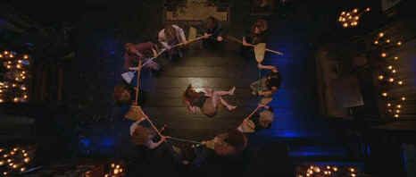

Waner/1998/104m/WS 2.35
Brought up by their maiden aunts, Sally and Gillian Owens would like to forget their witch’s legacy, but between the temptations of their aunts and the taunts of the townsfolk, it’s not so easy. The eccentric aunts could be an advertisement for "Good Witchmaking Magazine." The sexy Gillian takes off in search of adventure and romance while stable Sally stays home and makes kids. But the Owens curse changes everything.
 |
Witches exorcism©Warner |
Set in a picturesque New England seaside
town, director Griffin Dunne works too hard at providing quaint touches, mostly a la the
aunts. The innocence of small town life is presented with a rather repugnant sugar
coating. When the film takes some strange dark turns it is mostly heavy-handed. A measure
of redemption comes with the arrival of an investigator searching for Gillian’s
serial killer boyfriend.
The quartet of witches working hard to make Practical Magic
appealing are Sandra Bullock, Nicole Kidman, Diane Wiest and Stockard Channing.
Kidman’s role as Gillian calls for too much sleaze while Bullock’s Sally never
lets it all hang out. The bed laid moments of witchcraft are left in the ample arms of old
pros Stockard Channing and Diane Wiest playing the aunts. Aidan Quinn doesn’t quite
know what to do with investigator Gary Hallet. Quinn and Bullock have nice screen
chemistry together, but they spend too little time getting to know one another. The maiden
aunts are the funniest part of Practical Magic, a film that strives so hard for its
quaintness that it falls on its rather broad posterior.
The production witches have done a nice job making a spell over
this transfer and turning it into a sharp and satisfying anamorphic DVD. A full color
range is tightly transferred with excellent skin tones. Bright colors and high contrast
camera work provide a snappy palette for Practical Magic. There’s a very
upbeat soundtrack accompanying much of the film. It’s delivered with a pleasant
range. It sort of falls apart when the saccharine gets too heavy, but it is well recorded
on the Dolby Digital 5:1 sound track. This special edition DVD of Practical Magic
includes scene specific commentary from director Griffin Dunne, two "making
of" shorts, several TV spots and a theatrical trailer. You need to solve a magic
potion mix to get tot he promotional shorts.